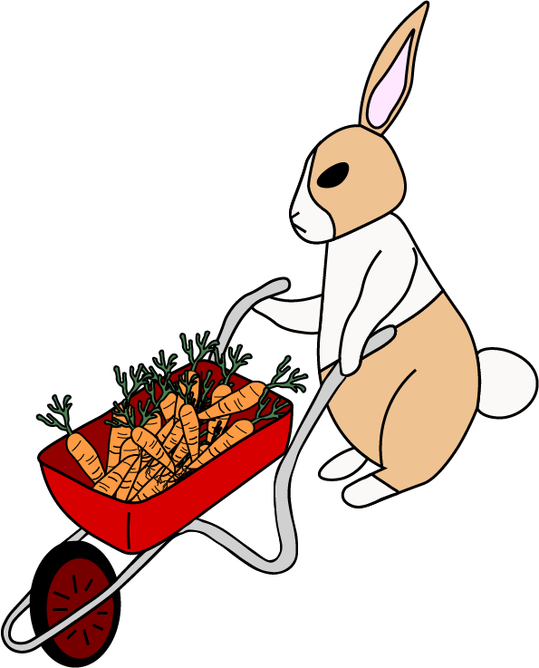

KONIJNEN SCHOOLTUIN
Schooltuinen
Bij onze schooltuin geven wij kinderen educatie over de natuur. Dat is zeker meer dan alleen zaaien, planten & oogsten. Onze doel is kinderen meer kennis en respect te geven voor natuur en milieu. In Amsterdam bestaan er als sinds 1920 schooltuinen. Oorspronkelijk waren zij bedoeld om kinderen in contact the krijgen met gezond voedsel dat ze anders niet zouden eten vanwege de grote armoede dat na de Eerste Wereldoorlog heerste.

Tuin van Melissa
Ben jij geinteresseerd in het bekijken van de tuintjes en lezen over de persoonlijke ervaringen van onze leerlingen met tuinieren? Klik dan hieronder voor meer.
Tuin van Jakob
Ben jij geinteresseerd in het bekijken van de tuintjes en lezen over de persoonlijke ervaringen van onze leerlingen met tuinieren? Klik dan hieronder voor meer.
Tuin van Laura
Ben jij geinteresseerd in het bekijken van de tuintjes en lezen over de persoonlijke ervaringen van onze leerlingen met tuinieren? Klik dan hieronder voor meer.